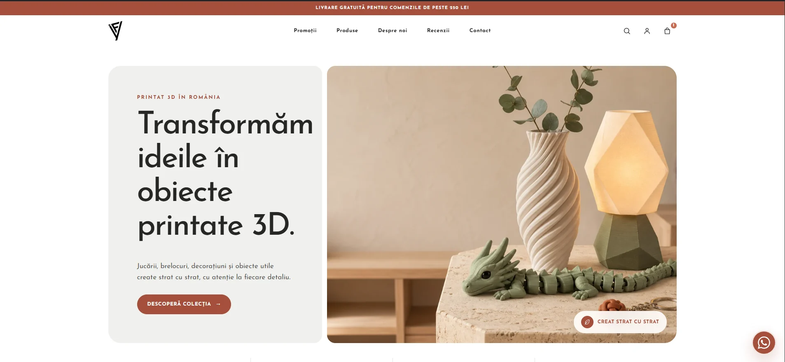

Clar pe telefon
Conținut aerisit, butoane ușor de apăsat și trasee scurte pentru utilizatorii care vin din reclame sau Google.
Spune-ne ce vrei să construiești. Discutăm direct la telefon, îți clarificăm opțiunile și îți recomandăm soluția potrivită — fără formulare lungi și fără timp pierdut.
Răspuns rapid Discuție fără obligații Recomandare clară

 Google PartnerExpertiză verificată
Google PartnerExpertiză verificată
Pornim de la ce trebuie să facă vizitatorul și construim fiecare ecran în jurul acelei acțiuni.
Conținut aerisit, butoane ușor de apăsat și trasee scurte pentru utilizatorii care vin din reclame sau Google.
Apeluri, WhatsApp, formulare și acțiuni importante așezate acolo unde clientul este gata să decidă.
Primești o soluție modernă, rapidă și configurată pentru SEO, măsurare și actualizări ulterioare.
Nu construim pagina separat de modul în care oamenii ajung la ea. Experiența noastră Google Partner ne ajută să conectăm website-ul cu reclamele, măsurarea apelurilor și obiectivele comerciale reale.
Glisează pe telefon sau folosește săgețile pentru a explora câteva proiecte CAB-IT.

E-commerceMagazin online pentru produse printate 3D, cu experiență responsive, catalog, coș și checkout.
Vezi proiectul
E-commerce premium
Website modern și elegant pentru un boutique premium dedicat bebelușilor.
Vezi proiectul Website de prezentare
Website de prezentare
Prezentare responsive, structură de conținut și design modern pentru servicii de evenimente.
Vezi proiectul Website & administrare
Website & administrare
Website responsive și panou de administrare personalizat pentru activități și programe.
Vezi proiectulProiectul 1 din 4 · glisează pentru următorul
Nu trebuie să pregătești un brief tehnic. Ne spui ce face afacerea și ce rezultat urmărești, iar noi structurăm următorii pași.
Discuția este directă, fără obligații. Îți răspundem la întrebări și stabilim dacă putem construi soluția potrivită pentru afacerea ta.
Un website de prezentare poate fi finalizat chiar în 24 de ore dacă structura, textele, imaginile și accesul la domeniu sunt disponibile. Termenul exact se confirmă după evaluarea cerințelor.
Un magazin online poate fi lansat în 3–7 zile pentru o structură standard. Numărul de produse, plățile, curierii și integrările speciale pot modifica termenul.
Da. Implementăm structură semantică, metadate, sitemap, robots, canonical, imagini optimizate și layout responsive. Pozițiile în Google depind ulterior și de concurență, conținut și autoritate.
Sună acum și spune-ne pe scurt ce vrei să construiești. De aici ne ocupăm noi să transformăm ideea într-un plan clar.
Apelează CAB-IT Expert